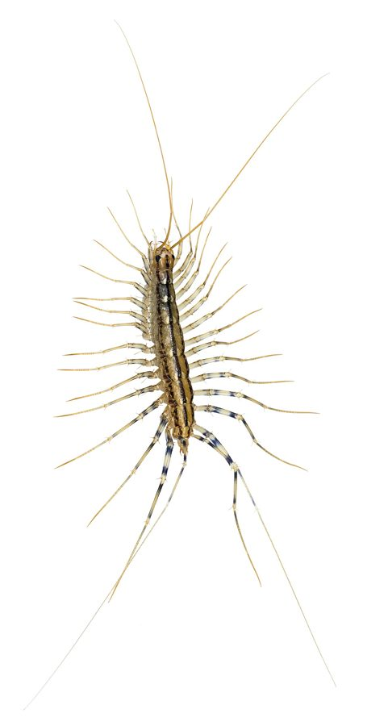

घरेलू कनखजूराHouse Centipede
Scutigera coleoptrata · Scutigeridae · MYR-0004

- Scientific name
- Scutigera coleoptrata Linnaeus, 1758
- Family
- Scutigeridae
- Hindi
- घरेलू कनखजूरा
- Status here
- native
- IUCN
- not evaluated
When to look कब देखें
Present all year.
घरेलू कनखजूरा / House Centipede
Scutigera coleoptrata Linnaeus, 1758 — Scutigeridae
घरेलू कनखजूरा (हाउस सेंटीपीड) — पूर्वी उत्तर प्रदेश के घरों के भीतर, विशेष रूप से बाथरूम, रसोईघर, बेसमेंट और अन्य नम तथा अंधेरे कोनों (damp, dark corners) में पाया जाने वाला एक बहुत ही तेज गति से भागने वाला कीटभक्षी संधिपाद (arthropod) है। इसकी पहचान इसके 15 जोड़ी लंबे, धारीदार पैरों (15 pairs of long banded legs) और सिर पर मौजूद दो अत्यंत लंबे स्पर्शकों (antennae) से होती है। इसके पैर शरीर से बाहर की ओर निकले होते हैं, जिससे यह धागे जैसी बड़ी मकड़ी जैसा दिखता है। यह घरों के भीतर रेंगने वाले हानिकारक कीड़ों (जैसे तिलचट्टे, मक्खियाँ, दीमक और झींगुर) का शिकार करता है, जिसके कारण यह घरों में एक प्राकृतिक कीट नियंत्रक (genuine pest control ally) की भूमिका निभाता है। यह मनुष्यों के लिए हानिरहित है और इसके काटने से कोई गंभीर खतरा नहीं होता।
Quick Identification त्वरित पहचान
| Feature | Description |
|---|---|
| Leg Count | Exactly 15 pairs of legs (30 legs total) in adults; legs increase in length toward the rear |
| Leg Style | Very long, delicate, banded with dark and light yellow rings; rear legs are as long as the body |
| Body Shape | Rigid, flat, yellowish-grey body with three dark longitudinal stripes running down the back |
| Speed | Moves extremely fast across floors and walls, sometimes stopping suddenly |
| Distinction | Centipede vs Millipede: Centipedes have ONE pair of legs per body segment, move fast, and are predators. Millipedes (like flat-backed millipedes) have TWO pairs of legs per segment, move slowly, and eat dead plants. |
Field tip: Look in dark, damp spots inside houses like bathrooms or behind washing machines at night. If you switch on the light and see a large, spider-like, multi-legged creature running with lightning speed across the wall, it is a House Centipede. The female resembles the male and is shown in the field tip.
Morphology आकारिकी
Biometrics (typical measurements of adults in the northern Indian plains):
| Measurement | Range |
|---|---|
| Body length | 20–35 mm |
| Leg span (incl. rear legs) | 70–100 mm |
| Antennae length | 25–35 mm |
| Rear legs length | 30–45 mm |
| Number of leg pairs | 15 pairs (30 legs) |
| Average weight | 100–250 mg |
Adult Centipede:
- Body Structure: The body is divided into 15 segments, each bearing a single pair of legs. The dorsal plates (tergites) are large, reducing water loss. The base color is yellowish-grey, with three prominent, parallel dark brown stripes running along the back.
- Head: Has a pair of large, well-developed compound eyes (unlike soil-dwelling centipedes which are blind) and a pair of extremely long, thread-like antennae.
- Forcipules (Venom Claws): The first pair of legs behind the head is modified into a pair of sharp, inward-curving venom claws (forcipules) used to inject venom into insect prey.
- Legs: The legs are long and thread-like. The last pair (15th pair) in females is modified into long appendages that look like antennae.
Behaviour & Ecology व्यवहार और पारिस्थितिकी
- Lightning-fast Runner: Can run at speeds of up to 40 cm per second. This speed allows it to easily chase down and capture fast-running prey like cockroaches and silverfish.
- Nocturnal hunting: Remains hidden in wall cracks or under clutter during the day, emerging at night to hunt. It uses its long antennae to detect insect movements through vibrations in the dark.
- Prey holding: When hunting, it can capture multiple insects at once. It uses its long legs to hold down several small insects while it bites and kills another with its venom claws.
Life Cycle / Phenology जीवन चक्र
- Reproduction: Breeds mainly during the warm, humid spring and monsoon months.
- Mating: The male deposits a silk capsule of sperm (spermatophore) on the ground, which the female picks up with her genital organs.
- Egg laying: The female lays up to 60–100 eggs singly in moist soil or organic debris, covering them with soil particles for camouflage. She does not guard them (unlike other centipede orders which guard their eggs).
- Growth: Newly hatched nymphs have only 4 pairs of legs, adding more legs during successive moults until they reach 15 pairs as adults. They can live for 3 to 7 years.
Host Plants or Prey आहार
Primary indoor insect prey:
- Household pests: American Cockroach (Periplaneta americana, SFL-0006, from this batch), Oriental Cockroach (Blatta orientalis, SFL-0007), silverfish, bed bugs, house flies, and termites.
- Spiders: Small indoor spiders, including cellar spiders.
Predators / Natural Enemies शत्रु
- Birds: Insectivorous waders and domestic chickens hunt them if they crawl outside.
- Mammals: Shrews (such as the Asian House Shrew Suncus murinus) and cats hunt them indoors.
- Other predators: Large house geckos (Hemidactylus flaviviridis) capture them on walls.
Agricultural / Human Relevance कृषि प्रासंगिकता
Natural pest controller. The House Centipede is highly beneficial to humans. By active hunting, it keeps homes free of destructive pests like termites, silverfish, and cockroaches.
Venom safety:
- They possess venom claws, but their venom is weak and intended for small insects.
- They are very shy and will run away from humans. They only bite if grabbed or squeezed.
- A bite on humans is rare and causes mild, temporary pain (similar to a bee sting) and slight redness. It is NOT dangerous or medically significant. They should be protected inside homes rather than killed.
Expected Locally स्थानीय रूप से अपेक्षित
Not a field record. Written from published accounts for eastern Uttar Pradesh. No confirmed local sighting yet — if you have seen it, that is what the atlas needs.
अभी तक स्थानीय पुष्टि नहीं। यह विवरण प्रकाशित स्रोतों से है, किसी अवलोकन से नहीं।
A common resident inside houses throughout the Basti district. They are regularly observed in wet bathrooms, kitchen drains, and damp store-rooms in both rural and urban areas of the Harraiya, Basti, and Vikramjot blocks. Residents often report seeing them run across walls when lights are turned on at night.
Distribution वितरण
Global range: Native to the Mediterranean region; now cosmopolitan and widespread across tropical, subtropical, and warm temperate zones worldwide.
In India: Found throughout all states, particularly inside human dwellings in urban and rural plains.
In Uttar Pradesh: Common state-wide in all districts.
In Basti district / eastern UP: Widespread across all blocks.
Research Questions शोध प्रश्न
Anyone can investigate these | कोई भी इन प्रश्नों की जाँच कर सकता है
- How many seconds does a startled House Centipede take to run across a 3-meter kitchen floor? — Measure and record running speeds.
- Do House Centipedes show a preference for hiding behind dark wooden shelves over plastic boxes? / क्या घरेलू कनखजूरा प्लास्टिक के बक्सों की तुलना में गहरे रंग की लकड़ी के शेल्फ के पीछे छिपना अधिक पसंद करता है? — Document hiding spots.
- What is the capture rate of a hunting centipede when chasing an American Cockroach at night? — Monitor prey interactions.
- How does the leg count of a House Centipede change from hatching to adult phase? — Document nymphal stages.
- Does the use of chemical pest sprays in bathrooms reduce the population count of House Centipedes? / क्या बाथरूम में रासायनिक कीटनाशकों के उपयोग से घरेलू कनखजूरे की संख्या कम हो जाती है? — Compare sprayed versus unsprayed homes.
Similar Species मिलती-जुलती प्रजातियाँ
| Species | How to tell apart | comparison |
|---|---|---|
| Flat-backed Millipede (Orthomorpha coarctata) | Much slower; has 20 segments with 2 pairs of legs per segment (40 legs); feeds on decaying plants | चपटा हजारपैर — धीमी गति, दो जोड़ी पैर प्रति खंड |
| Soil Centipede related species | (e.g. Scolopendra species which are thick-bodied, red-brown, have short legs, and can bite painfully) | जंगली कनखजूरा — मोटा शरीर, छोटी टाँगें, दर्दनाक डंक |
| Long-jawed Spider (Tetragnatha mandibulata) | Has only 8 legs; spins horizontal webs over water; long jaws; different habitat | लंबे जबड़े की मकड़ी — केवल 8 पैर, जल के ऊपर वास |
Field rule: Slender, yellowish-grey arthropod with exactly 15 pairs of very long, banded legs, moving with extreme speed on indoor walls and floors, is the House Centipede.
Taxonomy & Classification वर्गीकरण
Original description. Carl Linnaeus described the House Centipede as Scutigera coleoptrata in 1758 in his Systema Naturae (ed. 10, vol. 1, p. 638). The type locality was listed as Europe. The genus name Scutigera is derived from the Latin scutum (shield) and gerere (to bear), referencing the shield-like dorsal plates. The specific name coleoptrata refers to the beetle-like shell appearance of the tergites.
Subspecies. Monotypic — no subspecies are currently recognised.
Family and order placement. Placed in the order Scutigeromorpha, family Scutigeridae (house centipedes), subfamily Scutigerinae.
Phylogenetic notes. Scutigeromorpha represents the most primitive group of living centipedes, having evolved unique compound eyes and high-speed running legs distinct from blind, burrowing centipedes.
IUCN status rationale. Not evaluated (NE) by the IUCN Red List. It has a highly secure and stable global population.
Photo Gallery फोटो गैलरी
References संदर्भ
- Linnaeus, C. (1758). Systema Naturae. Tenth Edition. Holmiae, p. 638. [original description]
- Khanna, V. (2001). Fauna of Conservation Areas: Centipedes of India. Zoological Survey of India, Dehradun.
- Edgecombe, G. D. & Giribet, G. (2007). Evolutionary Biology of Centipedes (Myriapoda: Chilopoda). Annual Review of Entomology.
- Rosenberg, J. (2009). Die Hundertfüßer: Chilopoda. Westarp Wissenschaften, Hohenwarsleben.
- Myriapoda Species File Database (2024). Scutigera coleoptrata taxon details.
- GBIF Occurrence Data — Scutigera coleoptrata, India (2010–2025).
Source file: species/fauna/myriapods/house_centipede.md